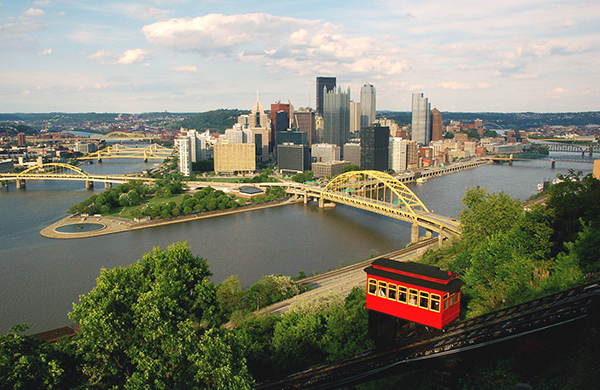
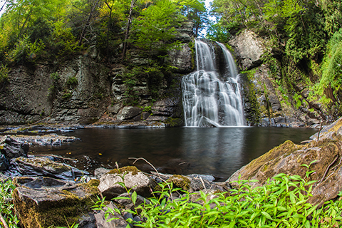

Reading Pagoda
The Reading Pagoda was built in 1908 by businessman and politician William Abbott Witman Sr. as the centerpiece of a planned luxury resort, but it became a city icon after financial and licensing failures. However, this does not mean it is useles as it later became a very beautiful tourist atraction for many to go and see. This place is very popular during the fall due to the rare chance to get inside and seeing the beautiful inside design for only $3. During the fall you also get this chilly yet relaxing view of the building on Mount Pennt.
Locations To Visit

Pittsburgh
Pittsburgh, also known as The Steel City, is a huge metropolis city, known for its famous tall buildings like the Skyline in downtown Pittsburgh, or The U.S Steel Tower, which is the tallest tower in the city. If youre afraid of heights than you can visit point State Park, a green park where you can also tour the 19th century Fort Pitt Block House. Or you can visit one of its three extensive rivers under their bridges.

BushKill Falls
Located in the beautiful Pocono Mountains, lies the marvelous BushKill Falls. Access through hiking trails, comes the eight beautiful waterfalls that are surrounded by beautiful greenery. Cross extensive bridges to reach the heart of Pennsylvania and be surrounded by mother nature herself. You could even go for a swim if you want.
Gettysburgh National Military Park
In July of 1863, one of the most significant battles ever fought in the Civil War was the Battle of Gettysburg. Now you can visit the aftermath of the battle and see how it all went down. Visit and take part in recreations of the battle or pay a visit to the National Cemetery to pay respect to those who have fought for us in The Civil War.